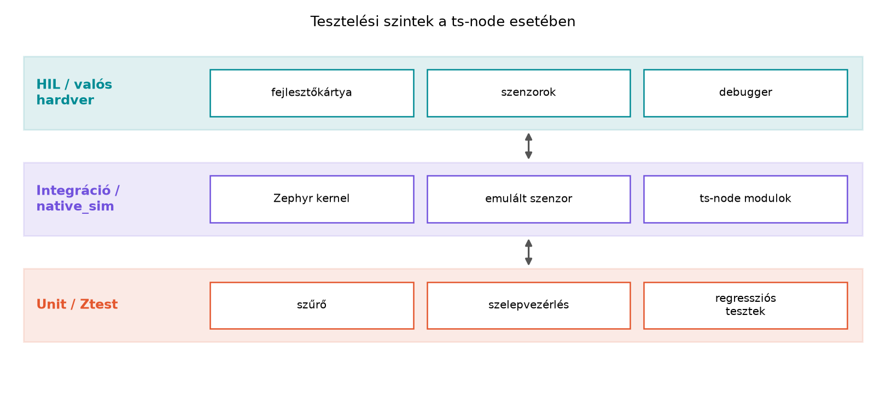

A TerraSense üvegházában a ts-node szenzorcsomópont
szoftverét fejlesztve a leglassabb visszajelzést a valós hardverre
történő flashelés és a terepi hibakeresés adja. Egy szenzorolvasási
logikai hiba például csak akkor derülhet ki, amikor a csomópontot
ténylegesen rákötjük a szenzorra, és megtörténik a mérés. Ha a hibát a
fejlesztőasztalon, hardver nélkül, determinisztikusan reprodukálható
tesztekkel már a build előtt elkapjuk, akkor a fejlesztési ciklus
percekre rövidül, és a hibák nem jutnak ki a terepre. Az Eszközszoftver-architektúra: rétegek és
állapotgépek alfejezetben a ts-node kódját rétegekre
bontottuk: a hardverfüggő szenzorolvasást különválasztottuk a szűrő- és
szelepvezérlési logikától. Ez a szétválasztás teszi lehetővé, hogy az
üzleti logikát hoston, rögzített bemenetekkel teszteljük. Ebben az
alfejezetben kiegészítjük a firmware-t Zephyr Ztest tesztekkel, és a
tényleges modulokat a native_sim célon teszteljük.
A hoston történő eszközszoftver-tesztelés alapja, hogy a hardverfüggő
részeket elkülönítjük a tiszta logikától. A ts-node
esetében a hardverfüggő szenzorolvasás a Szenzorolvasás a Zephyr sensor API-val modulban
marad, a sensor_filter (Mintavétel,
kalibráció és szűrés) és a valve (Aktuátorok: biztonságos vezérlés és visszajelzés)
pedig nem hívja közvetlenül a Zephyr sensor API-t. A
valve a GPIO-t a struct valve_ctrl mezőin
keresztül éri el, és hw_present = false esetén szimulált
szelepként működik, így hardver nélkül tesztelhető.
Definíció. A HAL interfész olyan C nyelvű absztrakció, amely a hardverműveleteket függvénycsoportként írja le, és a felsőbb rétegek csak ezen a felületen keresztül érik el a hardvert. A konkrét implementáció lehet valódi szenzor-meghajtó vagy teszt-mock.
Definíció. A függőség-befecskendezés C-ben azt jelenti, hogy a modul nem fordítási időben köti be a hardverfüggő implementációt, hanem futásidőben kap egy függvénymutatókat tartalmazó struktúrát. Egy általános példa:
typedef struct {
int (*read_temperature_celsius_milli)(int32_t *out);
int (*read_humidity_percent_milli)(int32_t *out);
int (*read_soil_moisture_percent)(int32_t *out);
} sensor_port_t;A ts-node valós moduljaiban a hardverhatár ennél
egyszerűbb: a sensor_filter tiszta számítás, bemenete és
kimenete skalár, ezért közvetlenül tesztelhető; a valve a
struct valve_ctrl output,
feedback és hw_present mezőin keresztül éri el
a GPIO-t, és hw_present = false esetén szimulált szelepként
működik. A labor ezért nem vezet be új HAL-interfészt, hanem a két
tényleges modult teszteli.
Ztest. A Ztest a Zephyr beépített
egységteszt-keretrendszere. A tesztek ugyanabban a buildben fordulnak,
mint a firmware, de nem a termelési main fut, hanem a
teszt-suite-ok. A fejezet a Zephyr 3.7.0 LTS Ztest API-ját használja: a
ZTEST_SUITE, ZTEST és zassert_*
makrók suite-okba szervezett, assertelésen alapuló teszteket tesznek
lehetővé.
Twister. A Twister a Zephyr tesztfuttató és
riportáló eszköze. A west twister parancs bejárja a
tesztfákat, lefordítja a teszteket a megadott boardra vagy szimulátorra,
lefuttatja őket, és összesített jelentést ad. A Twister integrálható
CI-rendszerbe, így a host-tesztek automatikusan lefutnak minden push
után.
native_sim. A native_sim egy Zephyr
board, amely nem mikrovezérlőt emulál, hanem a Zephyr kernelt és a
modulokat natív x86-os Linux processzként futtatja. A perifériák nagy
része ebben a környezetben nem elérhető, de a logikai tesztekhez nincs
is rájuk szükség. A native_sim gyors, debuggerrel jól
vizsgálható, és pontosan ez a cél: a hardverfüggetlen részeket hoston
futtatni.

A hardware-in-the-loop (HIL) a tesztelés azon foka, ahol a szoftver valódi vagy nagy pontossággal emulált hardverrel együtt fut. Itt már a valódi időzítések, elektromos jelek és szenzorhibák is szerepet kapnak. Ez az alfejezet csak előkészíti a HIL-t: a logikai teszteket hoston futtatjuk, a HIL-t a Tesztelési szintek: unit, integráció, HIL, terheléses teszt alfejezetben részletezzük.
A tesztelési stratégia kiválasztásakor a következő szempontokat érdemes mérlegelni.
| Szempont | Unit teszt izolált modulokkal | native_sim integráció | HIL valós hardverrel |
|---|---|---|---|
| Sebesség | másodpercek | másodpercek–percek | percek–órák |
| Determinizmus | teljesen kontrollált | kontrollált, de időzítés szimulált | valós időzítés, környezet zajos |
| Hardverhibák modellezése | injektált bemenetekkel tetszőlegesen | korlátozott | valós, de nehezen reprodukálható |
| Futtatási környezet | Linux host | Linux host | fejlesztőkártya + labor |
| Legjobb felhasználás | szűrő, szelepvezérlés, szekvenciák | modulok együttműködése, kernel-szolgáltatások | szenzor-kalibráció, teljesítménymérés |
A ts-node esetében a szűrő és a szelepvezérlés tiszta
egységtesztet érdemel: a sensor_filter közvetlenül, a
valve hw_present = false mellett hívható.
Amikor a modulok együtt futnak a Zephyr szenzor-alrendszerrel, akkor
native_sim integrációs teszt jöhet szóba. A valós hardvert
csak akkor vesszük elő, ha a szenzor tényleges viselkedését, a bootolást
vagy az energiafogyasztást kell ellenőrizni.
Ebben a laborban a ts-node már meglévő moduljaihoz – a
Szenzorfúzió és szűrés alfejezet
sensor_filter.c és a Szelepvezérlés és
biztonsági korlátok alfejezet valve.c moduljához –
írunk Ztest teszteket, és futtatjuk őket native_sim alatt.
Nem írunk új szűrőt vagy állapotgépet: a cél az, hogy a ténylegesen
továbbvitt firmware viselkedését rögzítsük, beleértve a korábban
javított hibák regressziós tesztjeit is.
Továbbvitt eredmény. Az itt létrehozott host-tesztek
– test_sensor_filter.c, test_valve.c, valamint
a hozzájuk tartozó prj.conf és testcase.yaml –
a CI/CD a firmware-től a backendig alfejezetben
a firmware-feladat részeként automatikusan lefutnak.
Munkakönyvtár:
mkdir -p ~/iot-labor/i020/src ~/iot-labor/i020/tests
cd ~/iot-labor/i020A labor feltételezi, hogy a Mintavétel,
kalibráció és szűrés és Aktuátorok: biztonságos
vezérlés és visszajelzés labor elkészült, és a modulok a
~/iot-labor/i014/src/, illetve
~/iot-labor/i015/src/ könyvtárban vannak. Másoljuk át a
tényleges forrásokat a tesztprojektbe:
cp ~/iot-labor/i014/src/sensor_filter.c ~/iot-labor/i020/src/
cp ~/iot-labor/i014/src/sensor_filter.h ~/iot-labor/i020/src/
cp ~/iot-labor/i015/src/valve.c ~/iot-labor/i020/src/
cp ~/iot-labor/i015/src/valve.h ~/iot-labor/i020/src/A sensor_filter fejlécének lényeges része (a teljes fájl
a Mintavétel, kalibráció és szűrés alfejezetben
van):
struct ema_filter {
int32_t y;
uint32_t denom;
bool initialized; /* hamis, amíg nincs érvényes minta */
};
void ema_init(struct ema_filter *f, uint32_t denom);
int32_t ema_update(struct ema_filter *f, int32_t x);A valve fejlécének lényeges része (a teljes fájl az Aktuátorok: biztonságos vezérlés és visszajelzés
alfejezetben van):
struct valve_ctrl {
const struct gpio_dt_spec *output;
const struct gpio_dt_spec *feedback;
bool requested_open;
bool reported_open;
bool hw_present;
int64_t on_deadline_ms;
int64_t max_on_time_ms;
int64_t mismatch_since_ms;
};
int valve_init(struct valve_ctrl *v, int64_t max_on_time_ms, bool hw_present);
int valve_set_target(struct valve_ctrl *v, bool open);
bool valve_is_open(const struct valve_ctrl *v);
int valve_tick(struct valve_ctrl *v);A valve_init(..., hw_present = false) szimulált szelepet
hoz létre: a GPIO-t nem éri el, a reported_open a kért
állapotot tükrözi, így a biztonsági logika hardver nélkül tesztelhető. A
sensor_filter egyáltalán nem függ a Zephyr hardver-API-tól,
ezért a hoston közvetlenül hívható. Az egységtesztekhez nincs szükség
külön mock HAL-ra; a hardverhatár a valve_ctrl
hw_present mezője, illetve a tiszta függvények
bemenete.
A tesztprojekt tests/prj.conf fájlja engedélyezi a
Ztestet és a valve.c által használt alrendszereket:
CONFIG_ZTEST=y
CONFIG_LOG=y
CONFIG_GPIO=y
CONFIG_PRINTK=yA tests/testcase.yaml írja le a Twisternek a tesztet. A
harness: ztest beállítás azt jelenti, hogy a Twister a
Ztest kimenetét értelmezi, és nem elégszik meg a folyamat nulla kilépési
kódjával:
tests:
ts_node.i020:
type: unit
platform_allow: native_sim
integration_platforms:
- native_sim
tags: ztest
harness: ztestA tests/CMakeLists.txt a projekt src/
könyvtárából fordítja a tényleges modulokat, és a tesztfájlokat is
hozzáadja:
cmake_minimum_required(VERSION 3.20)
find_package(Zephyr REQUIRED HINTS $ENV{ZEPHYR_BASE})
project(ts_node_tests)
target_include_directories(app PRIVATE ${CMAKE_CURRENT_SOURCE_DIR}/../src)
target_sources(app PRIVATE
test_sensor_filter.c
test_valve.c
../src/sensor_filter.c
../src/valve.c
)A teszteket suite-onként egy-egy fájlba tesszük. A
ZTEST_SUITE regisztrációt pontosan egyszer, abban a fájlban
kell elhelyezni, ahol a suite tesztjei vannak. Nincs szükség központi
test_main.c fájlra: a Ztest a linker-szekciókból gyűjti
össze a suite-okat, és a futtató keretrendszer saját belépési ponttal
rendelkezik. Egy központi fájlban megismételt
ZTEST_SUITE(...) ugyanannak a suite-nak a többszörös
definícióját adná, amit a linker duplikált szimbólummal jelez.
A tests/test_sensor_filter.c az EMA első mintáját és a
mozgóátlag kezdeti viselkedését ellenőrzi. Az első teszt egyben
regressziós teszt: a korábbi, nulláról induló EMA-implementáció az első
3000-es mintára 750-et adott volna, mert a kezdőértéket nullának
vette.
/* tests/test_sensor_filter.c */
#include <zephyr/ztest.h>
#include "sensor_filter.h"
ZTEST(sensor_filter, test_ema_first_sample_initializes)
{
struct ema_filter f;
ema_init(&f, 4);
/* Regresszió: a nulláról induló változat az első 3000-es mintára
* 750-et adott volna, mert a kezdőértéket nullának vette. */
zassert_equal(ema_update(&f, 3000), 3000,
"az EMA első mintája legyen a kezdőérték");
zassert_equal(ema_update(&f, 3000), 3000,
"azonos minta ne módosítsa az EMA-t");
}
ZTEST(sensor_filter, test_ema_converges_towards_input)
{
struct ema_filter f;
ema_init(&f, 4);
zassert_equal(ema_update(&f, 0), 0, "első minta 0");
zassert_equal(ema_update(&f, 4000), 1000,
"a negyednyi lépés 1000 legyen");
zassert_equal(ema_update(&f, 4000), 1750,
"a következő lépés 1750 legyen");
}
ZTEST(sensor_filter, test_moving_average_first_samples)
{
struct moving_average f;
ma_init(&f, 4);
zassert_equal(ma_update(&f, 1000), 1000, "egy minta átlaga önmaga");
zassert_equal(ma_update(&f, 3000), 2000, "két minta átlaga 2000");
zassert_equal(ma_value(&f), 2000, "ma_value ugyanazt adja");
}
ZTEST_SUITE(sensor_filter, NULL, NULL, NULL, NULL, NULL);A tests/test_valve.c a biztonsági logikát teszteli
szimulált szeleppel (hw_present = false). A második teszt
egyben regressziós teszt: a korábbi változat minden OPEN parancsra új
határidőt számolt, és ezzel meghosszabbította a maximális
nyitvatartást.
/* tests/test_valve.c */
#include <zephyr/ztest.h>
#include <zephyr/kernel.h>
#include "valve.h"
ZTEST(valve, test_repeated_open_does_not_extend_deadline)
{
struct valve_ctrl v;
int64_t first_deadline;
zassert_equal(valve_init(&v, 60000, false), 0, "init");
zassert_equal(valve_set_target(&v, true), 0, "első OPEN");
first_deadline = v.on_deadline_ms;
zassert_true(first_deadline != 0, "nyitáskor legyen határidő");
k_sleep(K_MSEC(5));
zassert_equal(valve_set_target(&v, true), 0, "ismételt OPEN");
zassert_equal(v.on_deadline_ms, first_deadline,
"ismételt OPEN ne hosszabbítsa meg a határidőt");
}
ZTEST(valve, test_max_on_time_forces_close)
{
struct valve_ctrl v;
zassert_equal(valve_init(&v, 1, false), 0, "init 1 ms korláttal");
zassert_equal(valve_set_target(&v, true), 0, "OPEN");
k_sleep(K_MSEC(2));
zassert_equal(valve_tick(&v), 0, "tick a határidő után");
zassert_false(v.requested_open, "a kérés zárásra vált");
zassert_false(valve_is_open(&v), "a szelep zárva");
}
ZTEST_SUITE(valve, NULL, NULL, NULL, NULL, NULL);A ZTEST_SUITE mindkét fájlban pontosan egyszer szerepel,
és a suite neve (sensor_filter, valve) a
tesztnevek előtagja. Nincs külön test_main.c: a futtató
keretrendszer a linker-szekciókból gyűjti össze a regisztrált
suite-okat.
A build és futtatás a tests/ könyvtárból,
native_sim célra:
cd ~/iot-labor/i020/tests
west build -b native_sim .
./build/zephyr/zephyr.exeA Twister a testcase.yaml alapján fedezi fel a tesztet.
A platformot -p kapcsolóval kell kiválasztani:
cd ~/iot-labor/i020
west twister -T tests -p native_simHa a west twister parancs a telepített Zephyr-verzióban
nem érhető el, a
zephyr/scripts/twister -T tests -p native_sim hívás
ugyanezt teszi. A Twister kimenetében ellenőrizd, hogy a kiválasztott
tesztscenáriumok és a futtatott binárisok száma 1; a
harness: ztest és a --inline-logs kapcsoló
megmutatja, hogy valóban lefutott-e az öt teszt, és nem nulla tesztre
adott-e látszólagos sikert.
A várt kimenetben minden teszt PASS jelölést kap, például:
Running test suite sensor_filter
===================================================================
START - test_ema_first_sample_initializes
PASS - test_ema_first_sample_initializes
START - test_ema_converges_towards_input
PASS - test_ema_converges_towards_input
START - test_moving_average_first_samples
PASS - test_moving_average_first_samples
===================================================================
Running test suite valve
===================================================================
START - test_repeated_open_does_not_extend_deadline
PASS - test_repeated_open_does_not_extend_deadline
START - test_max_on_time_forces_close
PASS - test_max_on_time_forces_close
===================================================================
PROJECT EXECUTION SUCCESSFULA kimenet illusztratív; a pontos sorok a Zephyr kiadásától függnek. A
tesztek a tests/ könyvtárból a tényleges
../src/sensor_filter.c és ../src/valve.c
forrásokat fordítják, nem külön, egyszerűsített modellt. A
valve tesztek hw_present = false mellett
futnak, így nem nyitnak valódi GPIO-t; a visszajelzés (feedback) ágát és
a hardveres hibakezelést csak GPIO-emulációval vagy HIL-ben lehet
lefedni.
A tesztek sikeres futtatása után a kernel
PROJECT EXECUTION SUCCESSFUL sorral ér véget. Ha egy assert
meghiúsul, a Ztest kiírja a fájlt, a sort és a feltételt. A Twister
jelentése twister.json formában megőrzi az eredményeket,
ami CI-ben is felhasználható.
| Hibatünet | Lehetséges ok | Javítás |
|---|---|---|
| A Twister nulla tesztet futtat | A testcase.yaml hiányzik, rossz helyen van, vagy a
platform_allow nem tartalmazza a
native_sim-et |
Tedd a testcase.yaml-t a tests/
könyvtárba, és a west twister -T tests -p native_sim hívást
használd |
| Duplikált szimbólum linkeléskor | Ugyanaz a ZTEST_SUITE több fájlban szerepel |
Suite-onként egyszer regisztrálj; hagyd el a központi
test_main.c-t |
| Assert hiba az EMA első mintájánál | Az ema_update nulláról indul, és nem az első mintát
tekinti kezdőértéknek |
Ellenőrizd az initialized flag kezelését a Mintavétel, kalibráció és szűrés
ema_update függvényében |
| Az ismételt OPEN meghosszabbítja a határidőt | A valve_set_target az idempotencia-ellenőrzés előtt
számol új határidőt |
Azonos kérésre a határidő módosítása nélkül térj vissza |
A valve teszt valódi GPIO-t próbál elérni |
A teszt hw_present = true értékkel inicializál |
Használj false értéket a szimulált szelephez |
Globális állapot a tesztek között. Ha a teszt
nem inicializálja a szűrőt vagy a szelepvezérlőt minden teszt előtt, a
sorrendtől függő eredményt kaphat. Minden teszt elején hívjuk az
ema_init, ma_init vagy valve_init
függvényt.
Hardverhívás a unit tesztben. A
valve modul csak hw_present = true esetén ér
el GPIO-t; a tesztben ezért false értékkel kell
inicializálni. A sensor_filter tiszta függvényekből áll,
így közvetlenül hívható. A visszajelzés (feedback) ágához GPIO-emuláció
vagy HIL szükséges.
A native_sim időzítés valós hardverként
kezelése. A native_sim a Zephyr kernel szimulált
időalapját futtatja, de ez nem reprezentálja a valós órajel- vagy
periféria-időzítéseket. Az időzítésre épülő logikát hoston csak logikai
szinten tesztelhetjük; a k_sleep a szimulált időt lépteti,
nem valódi hardveres késleltetést mér.
A teszt a saját egyszerűsített modelljét
teszteli. Ha a CMake nem a ../src/sensor_filter.c
és ../src/valve.c tényleges forrásait fordítja, a zöld
tesztek nem igazolnak semmit a továbbvitt firmware-ről. Ellenőrizd a
CMake forráslistáját, és tartsd meg a korábbi hibákra visszatekintő
regressziós teszteket.
Fogalmi kérdés: Miért érdemes a
sensor_filter és a valve modulokat hoston,
Ztesttel tesztelni, és mit nem bizonyítanak ezek a tesztek a valós
hardveren?
Tervezési feladat: Tervezze meg a
valve modul azon tesztjeit, amelyek az ismételt OPEN
parancsot és a maximális nyitvatartási határidőt ellenőrzik. Adja meg a
tesztlépéseket, a vizsgált mezőket és azt, hogy mikor kell
hw_present = false értéket használni.
Implementációs feladat: Írjon Ztest tesztet a
sensor_filter EMA első mintájára, amely 3000-es bemenetre
3000-et vár, és mutassa meg, hogy a teszt a nulláról induló
implementáción elbukik. A tesztet a
tests/test_sensor_filter.c fájlba helyezze.
Hibakeresési feladat: Az ismételt OPEN parancsot
ellenőrző teszt azt várja, hogy a on_deadline_ms érték ne
változzon, a teszt azonban azt tapasztalja, hogy a határidő
meghosszabbodik. Keresse meg a hibát a valve_set_target
függvényben, javítsa ki, és indokolja a javítást.
A host-teszt gyors, determinisztikus és hardver nélkül
futtatható. A sensor_filter tiszta számítás, a
valve pedig hw_present = false mellett
szimulált szelepként működik, így a biztonsági logika (idempotencia,
maximális nyitvatartás) jól izolálható. A tesztek nem bizonyítják a
valós GPIO-időzítést, a visszajelzés elektromos viselkedését, a szenzor
kalibrációját vagy a HIL-környezetet; ezekhez hardveres vagy emulált
perifériás teszt kell.
A tesztlépések: inicializálás
valve_init(&v, 60000, false) hívással; első
valve_set_target(&v, true); a
v.on_deadline_ms elmentése; rövid k_sleep;
ismételt OPEN; annak ellenőrzése, hogy a v.on_deadline_ms
változatlan, a v.requested_open igaz, és a
valve_is_open(&v) igaz. A maximális nyitvatartáshoz 1
ms korláttal inicializálunk, OPEN után k_sleep-pel
túllépjük a határidőt, majd valve_tick(&v) után
ellenőrizzük, hogy a kérés és a jelentett állapot is zárult. A
visszajelzés ágához hw_present = false nem elegendő; ahhoz
GPIO-emuláció vagy HIL kell.
A teszt kiegészítése:
ZTEST(sensor_filter, test_ema_first_sample)
{
struct ema_filter f;
ema_init(&f, 4);
zassert_equal(ema_update(&f, 3000), 3000,
"az első minta legyen a kezdőérték");
}A nulláról induló implementáció az első frissítésnél
0 + (3000 - 0) / 4 = 750 értéket adna, ezért a
zassert_equal elbukna. A helyes Mintavétel, kalibráció és szűrés-implementáció az
initialized flaggel az első mintát közvetlenül kezdőértékké
teszi.
valve_set_target az
idempotencia-ellenőrzés előtt frissíti a határidőt:/* Hibás sorrend: minden OPEN új határidőt számol. */
v->on_deadline_ms = k_uptime_get() + v->max_on_time_ms;
if (v->requested_open == open) {
return 0;
}A helyes sorrend az azonos kérés korai visszaadása, a határidő módosítása nélkül:
if (v->requested_open == open) {
/* Idempotens: nem vált és nem hosszabbítja meg a határidőt. */
return 0;
}Az Aktuátorok: biztonságos vezérlés és visszajelzés modul már ezt a helyes sorrendet tartalmazza; a regressziós teszt feladata, hogy a hiba visszacsúszását megakadályozza.
Az alfejezetben a ts-node firmware hardverfüggetlen
logikáját tettük hoston tesztelhetővé Zephyr Ztest és
native_sim használatával. Nem új modellt írtunk, hanem a
ténylegesen továbbvitt sensor_filter.c (Mintavétel, kalibráció és szűrés) és
valve.c (Aktuátorok: biztonságos
vezérlés és visszajelzés) modulokat teszteltük. A
sensor_filter tiszta számításai közvetlenül hívhatók; a
valve hw_present = false mellett szimulált
szelepként működik, így a biztonsági logika GPIO nélkül vizsgálható.
Létrehoztuk a tests/test_sensor_filter.c és
tests/test_valve.c teszteket, a
tests/prj.conf, tests/testcase.yaml és
tests/CMakeLists.txt fájlokat, valamint a korábbi hibákra
visszatekintő regressziós teszteket: az EMA első mintáját és az ismételt
OPEN határidő-módosítását. A tesztek a tests/ könyvtárból
west build -b native_sim . paranccsal fordulnak, a Twister
pedig west twister -T tests -p native_sim hívással fedezi
fel őket; a várt, illusztratív kimenetben öt teszt kap PASS jelölést.
Továbbvitt eredmény: ezek a host-tesztek a CI/CD a firmware-től a backendig alfejezetben
automatikusan futnak a firmware-feladat részeként.
ZTEST_SUITE suite-onként egyszer, a tesztfájlban szerepel;
a tesztprojektet a testcase.yaml és a prj.conf
írja le, a platformot a Twister -p kapcsolóval választja, a
harness: ztest pedig a Ztest kimenetét értelmezi.sensor_filter.c és az Aktuátorok: biztonságos vezérlés és visszajelzés
valve.c; a valve visszajelzés (feedback) ágát
és a valós GPIO-viselkedést ez a host-teszt nem fedi le, ahhoz
GPIO-emuláció vagy HIL szükséges.valve.c a Zephyr k_uptime_get és logging
API-ját használja, ezért a teszt native_sim boardon fut; a
sensor_filter.c hardverfüggetlen.